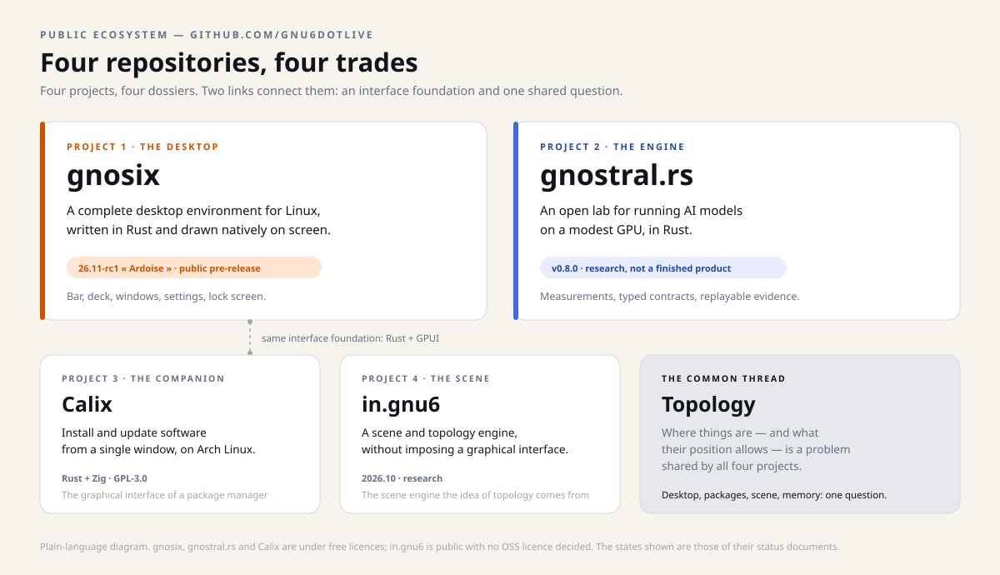
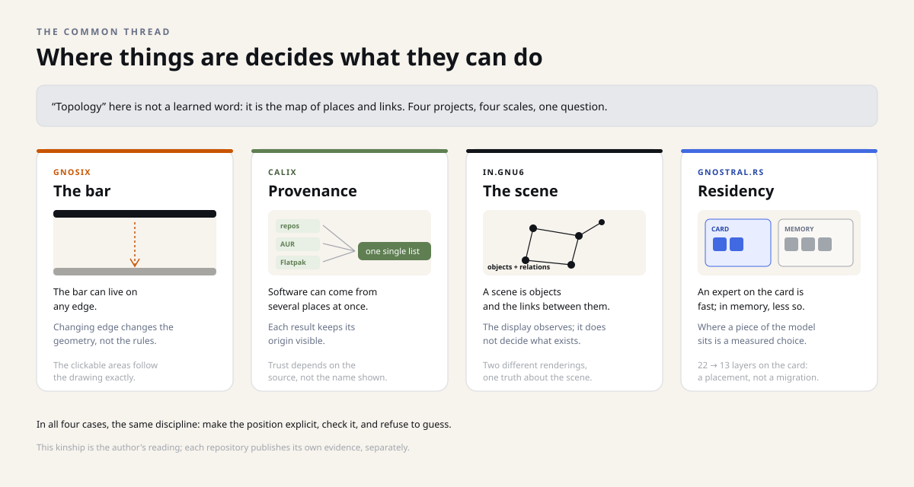

The desktop
gnosix
A complete desktop environment, written in Rust, that draws its own bar, its application deck, its settings and its lock screen. It runs on Linux, with the Hyprland compositor.
Experimental 26.11-rc1 « Ardoise »
Snapshot of October 29, 2026. This dossier describes the four repositories as they stood that day; the projects have moved on since, and the repositories are the authority. Underlined links lead to the sources, frozen at their state of that day. What came next lives on gnu6dotlive.github.io.
Public documentation · gnu6dotlive
This dossier tells the story of four public repositories — three under a free licence, the fourth with no licence decided yet: a Linux desktop, a local artificial-intelligence lab, a package manager and a scene engine. No advertising, no promises: what exists, what is proven, and what is still open.
The desktop
A complete desktop environment, written in Rust, that draws its own bar, its application deck, its settings and its lock screen. It runs on Linux, with the Hyprland compositor.
Experimental 26.11-rc1 « Ardoise »
The engine
A research lab trying to run large AI models on a modest graphics card — and publishing its measurements, including when they disappoint.
Research v0.8.0
The companion
A single native window to install, update and inventory the software of an Arch Linux system — without hiding where each package comes from.
Pre-1.0 v0.3.1
The scene
A scene and topology engine: it decides what exists; the displays only decide how to show it.
Research 2026.10.0
Four projects, four different trades, and one dossier for each: gnosix builds a visible desktop, gnostral.rs runs measurable research, Calix keeps an Arch Linux system's software in order, in.gnu6 provides the scene engine that serves as common ground.

The word sounds learned. It names something simple: the map of places and links. Where a thing is, what it is connected to, and what that position allows.
In gnosix, the bar can live on any edge of the screen; its position changes the geometry, not the rules. In Calix, a piece of software can come from several repositories; its origin stays visible. In in.gnu6, a scene is a set of objects and relations that the display does not decide. In gnostral.rs, a piece of a model placed on the graphics card runs faster than a piece left in main memory.

A file describing a feature does not prove it works. These projects explicitly separate written code, a passing test and real use.
A public repository is an open workshop. You can walk in, read, test — but nothing there is guaranteed installable, stable or supported.
Open source makes the recipe visible and reusable. It promises neither quality, nor maintenance, nor a user manual for the general public.
No promise of stability. All four projects are explicitly experimental or research. gnosix is not yet a desktop ready for others; gnostral.rs is not a server ready to deploy; Calix is pre-1.0; in.gnu6 has neither an OSS licence nor a stable API.
No marketing figures. The published numbers come from local measurements, with their protocol and their limits. When a claim has not been proven, it is withdrawn or flagged as such.
That is precisely what makes these repositories worth reading: they also document what did not work.
Dossier 1
How a desktop draws itself, remembers, and never acts without permission.
Dossier 2
How a large model is made to fit on a small card, and how that is proven.
Dossier 3
How six sources of software become a single list, without erasing where they come from.
Dossier 4
How an engine decides what exists, and lets the projectors decide the rest.
Method
The rule of evidence shared by the four repositories, and its limits.
Verify
From the site's “2.12×” to the raw receipt, in five steps.
Timeline
The four repositories on one timeline, day by day.
The technical words are translated in Glossary: the vocabulary.